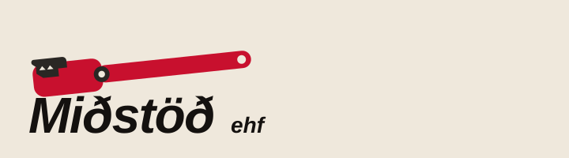

Merkið
Rörlykillinn.
Fyrirmyndin að merki Miðstöðvar er þungur rörlykill. Á lóðinni hangir hann á vegg yfir nafninu. Ekki merki teiknað í Reykjavík.

Lás
Tákn + nafn
Rauður rörlykill, kjaftur til vinstri. Þar undir „Miðstöð ehf“ í svörtu, feitu skáletri. Hvítur veggur. Þetta er merkið.
Litir
Rautt af lyklanum. Svart af nafninu. Pappírslitur af veggnum. Fjörðurinn utan við lóðina er bakgrunnur, ekki merki.
#C8102E · lyklarautt
#14110F · blek
#EFE8DC · veggur
#1A3D42 · fjörður

